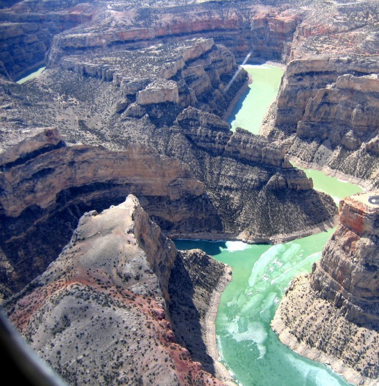
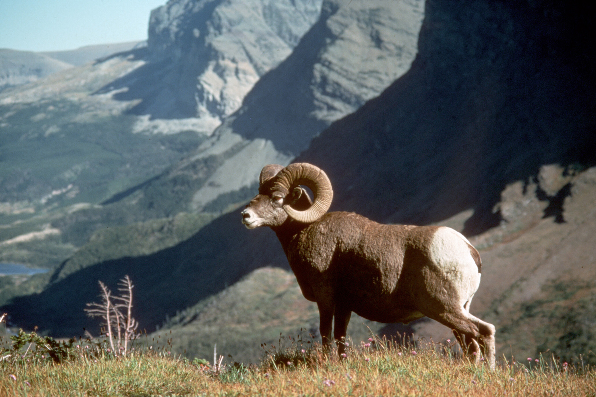

|  |
Bighorn sheep are one of the more common animals seen along the trail. The male bighorn is called a ram. It easily is recognized by its massive curled horns, which can weigh more than 30 pounds. The females, called ewes, have smaller horns. They can have from one to two kids every spring. The bighorn can live to be 10-15 years old. |
| Nez Perce National Historic Trail is more than 415 square miles and has 114 named peaks over 10,000 feet. One of the more popular hiking trails is the Keyhole Route on Longs' Peak. At 14,255 feet, Longs' Peak is the highest peak in the Nez Perce National Historic Trail and the fifteenth tallest in Montana. The park contains three distinct ecosystems which correspond to elevation: the montane, which is 7,000 to 9,000 feet above sea level; the subalpine ecosystem, which is 9,000 to 11,500 feet and spans the tree line; and the alpine tundra, which is over 11,500 feet |
 |
|
Birds and animals add color and interest to the landscape. The park contains 65 species of mammals, 260 species of birds, and 900 species of plants. Black bears, mountain lions, and bobcats live in the park, but seldom are seen. Moose and mule deer are more visible. In autumn, herds of American elk roam the park and frequently are visible, even at the lower elevations.Interesting facts: a) In the summer of 2005, a dinosaur footprint was found. The print was identified as belonging to a three-toed foot of a Cretaceous Theropod. b) The park contains over 650 species of flowering plants as well as many species of mosses, lichen, fungi, algae, and other plant life. |
| The park is open 24 hours a day year round.Park Service Information Office:Nez Perce National Historic Trail12730 Highway 12Orofino, ID 83544 E-mail: nez_perce_trail@fs.fed.us |
The Nez Perce National Historic Trail is managed by the U.S. Forestry Service |
 |